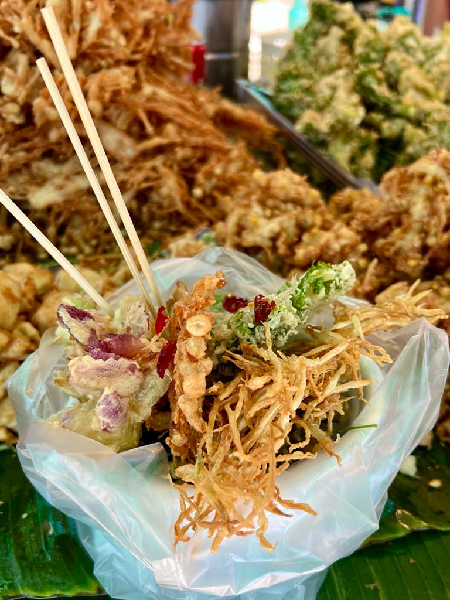
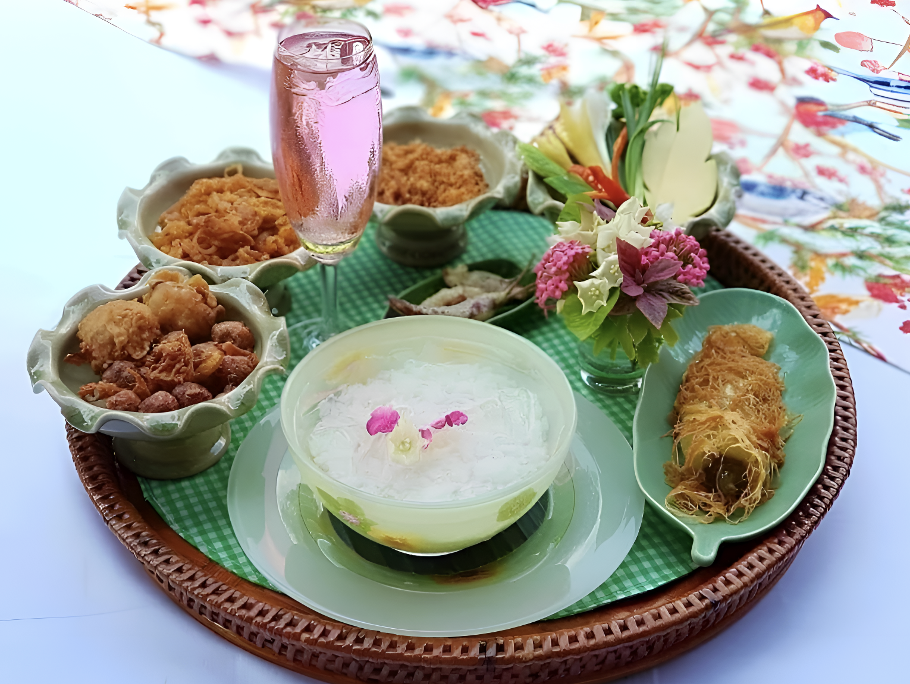
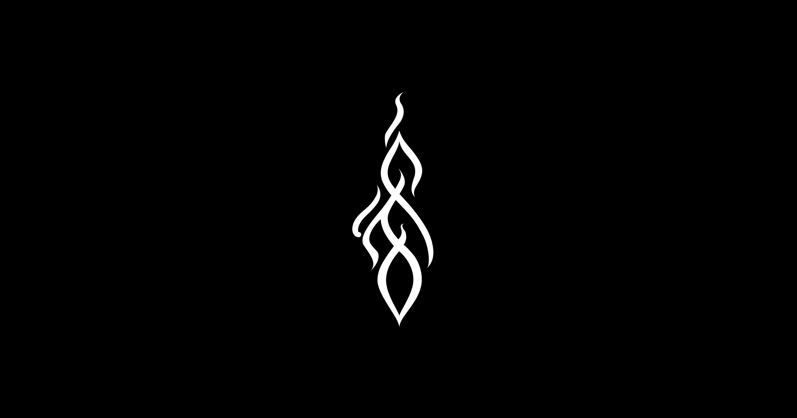
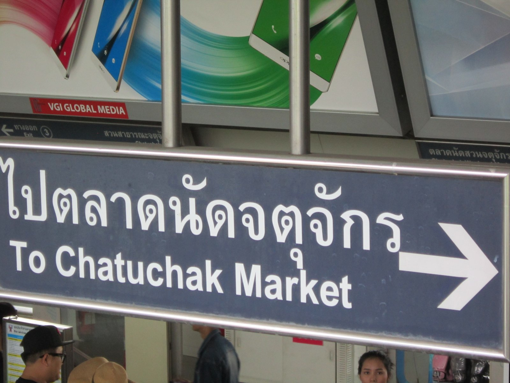

Nonthaburi · Pak Kret · Greater Bangkok
A Sat–Sun framework built around one choice: which Michelin table you book, and what that decision cascades through the rest of the weekend.




You want the rarest thing central Bangkok can't offer: a Michelin-starred meal in a riverside garden that's been starred since 2019. The khao chae in April aside, the full experience lives outdoors at dusk. A calm, early night. No alcohol means the focus stays on the food.
You want a chef's counter built around one obsession — Eastern-coast Thai ingredients, seafood, insects. Sittikorn Chantop won the 2025 Young Chef Award for a reason. The tasting menu rotates with the catch. And you plan to extend the night — JODD Fairs or Yaowarat after makes this a full Bangkok evening.